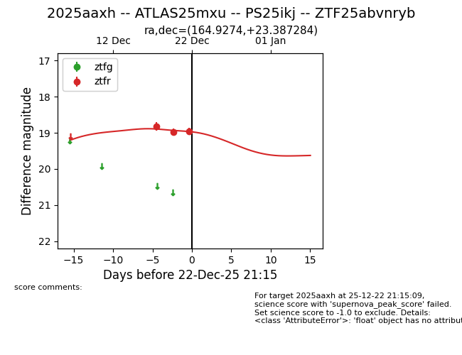
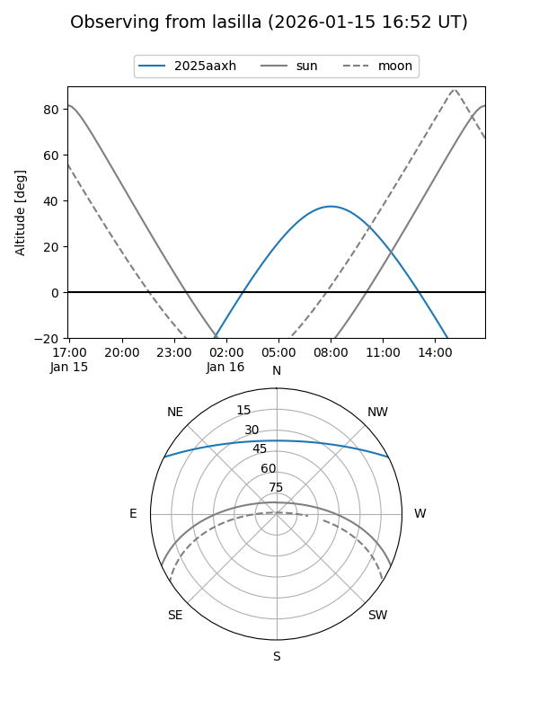
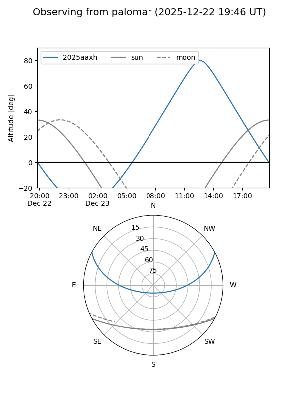
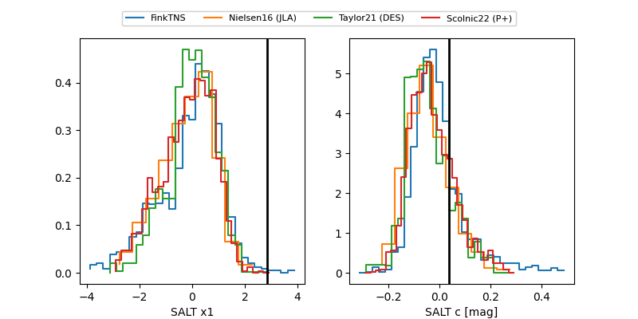

2025aaxh
Target 2025aaxh at 2025-12-31 17:00
Aliases and brokers:
FINK:
Lasair:
ALeRCE:
TNS:
YSE:
alt names
ZTF25abvnryb (ztf,fink_ztf)
2025aaxh (tns,yse)
ATLAS25mxu (atlas)
PS25ikj (panstarrs)
Coordinates:
equatorial (ra, dec) = 164.9274,+23.38728
equatorial (HMS+DMS) = 10:59:42.58,+23:23:14.22
galactic (l, b) = (215.1283,+64.51619)
Flags:
Photometry:
last ztfr=18.97
4 ztfr detections
Lightcurve

Visibility


Additional plots
